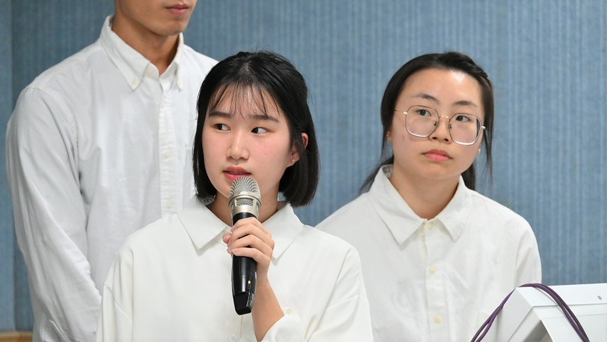

About me...
Hi!我是簡至青，目前就讀於國立陽明交通大學管理科學系碩士班一年級。以下是我的個人簡介!
「排球」教會我的事...
我對排球有濃厚的興趣，因此在大一時就加入女排系隊。平時累積的經驗和強化的基礎，使我在大二時就成為系隊先發球員，大三擔任女排隊副隊長。
在過程中，我學習到團隊合作、永不放棄的精神;在擔任副隊長期間展現執行力、領導力，且重視反饋。在2019年帶領球隊獲得中經盃女子排球組亞軍。
 與隊友們合照（右三）
與隊友們合照（右三）
專題研究...共享電動機車使用意願之研究
隨著共享經濟規模日漸擴大，電動機車在此浪潮下與之結合，形成共享電動機車平台供消費者選擇。研究中，想透過分析消費者使用意願及考量因素，探討其與受訪者之關聯。
在研究中，我主要負責文獻蒐集、問卷設計與分析、使用統計軟體（STATA）進行資料分析。利用問卷調查之資料進行迴歸分析，得出結論。最後給予平台改善方向，希望能提高台灣目前共享電動機車的使用率，並能夠連結其他公共交通運輸工具。
學習點...
1.奠定基本數據分析能力（STATA）、視覺化呈現簡報能力及文獻統整能力。
2.從中習得團隊分工的重要性，培養領導能力、危機處理的應對協調能力。
3.面對組內意見不合時，主動溝通協調，最後順利完成專題。 上台報告論文（左一）
競賽經歷...
大學期間參加兩次中興大學應用經濟系小論文競賽，其研究主題分別為:
1.大學生早午餐消費行為之研究 獲得第三名(2019.4~2019.6)
2.探討大學生對付費影音平台之願付價格—以Netflix為例 入圍決賽 (2020.4~2020.6)